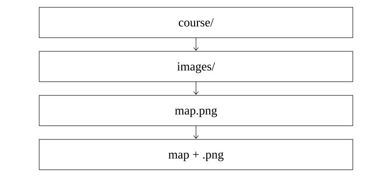

Файл форматтары және файл өлшемі
1. Оқу мақсаттары
Файл аты, кеңейтімі мен жолын ажырату
Форматтарды міндетіне қарай таңдау
Көлемге әсер ететін факторларды түсіндіру
2. Алдын ала білу қажет
Бума мен файл
Өлшем бірліктері
Мәтін, сурет, дыбыс түрлері
3. Негізгі теория
Файл, бума және жол
Файл атауы бар деректер жиынтығы ретінде сақталады. Бума файлдар мен басқа бумаларды ұйымдастырады. Жол файлдың орналасуын көрсетеді. Мысалы, course/images/map.png жолында course және images бумалар, map.png файл атауы.
Дереккөз: S1:13,15-16; S3:23-27
Кеңейтім және формат
Кеңейтім файл атауындағы соңғы нүктеден кейінгі бөлікте беріледі: plan.final.pdf үшін pdf. Ол формат туралы белгі береді, бірақ мазмұнның дәлелі емес. Атауын .txt-тен .png-ге өзгерту мәтінді суретке айналдырмайды. Түрлендіру үшін программаның экспорттау немесе сақтау мүмкіндігі керек.
Дереккөз: S1:13-14; S3:24-25
Мақсатқа сай формат
TXT қарапайым мәтінге, DOCX өңделетін мәтіндік құжатқа, PDF бет пішімін сақтап таратуға қолданылады. PNG пен JPEG растр суреттерге, MP3 дыбысқа, MP4 мультимедиа контейнеріне, ZIP архивке жатады. Бір программа бірнеше форматты аша алады. Кеңейтімді бір ғана программаға қатаң байламаңыз.
Дереккөз: S1:14; S2:25-28
Файл өлшемі
Файл өлшемі деректердің байт санын көрсетеді. Бірдей көрінетін материал әр форматта әртүрлі көлем алуы мүмкін: кодтау, сурет ажыратымдылығы, сығу және қызметтік деректер әсер етеді. Дискідегі бөлінген орын файлдың логикалық өлшемінен бөлек шама. Кішірек файл әрдайым сапалырақ немесе нашарырақ деген қорытынды дұрыс емес.
Дереккөз: S2:25-28; S3:27-31
4. Терминдер
Кеңейтімнің орны?
Соңғы нүктеден кейін.
Бума не үшін?
Файлдарды ұйымдастыру.
Атау өзгерсе формат өзгере ме?
Ішкі мазмұн автоматты түрленбейді.
Көлемге не әсер етеді?
Мазмұн, кодтау, сығу, қызметтік деректер.
5. Сызба

course және images бумалары файлдың орнын көрсетеді. map.png атауы негізгі атау мен кеңейтімге бөлінеді. Соңғы қадам тасымалдау емес, атауды талдау.
Осы сабаққа жаңадан жасалған сызба.6. Қадамдық мысалдар
course/images/map.png жолын талдаңыз.
- Бумалар: course және images.
- Файлдың толық атауы: map.png.
- Негізгі атауы: map. Кеңейтімі: png.
photo.jpg атауын photo.txt деп өзгерткенде не болады?
- Атау мен кеңейтім өзгереді.
- Суреттің ішкі байттары өздігінен мәтінге түрленбейді.
- Форматқа сай программамен ашу не нақты экспорт қажет.
Бір мәтін TXT-де 800 байт, DOCX-де 12 000 байт. Бұл қайшылық па?
- Көрінетін мәтін бірдей болуы мүмкін.
- DOCX пішімдеу мен құрылымдық деректерді де сақтай алады.
- Файл өлшемі тек әріп санымен анықталмайды.
Жазылым үлгісі
course/images/map.png7. Салыстыру кестесі
| Мақсат | Мысал | Нені ескеру керек |
|---|---|---|
| Қарапайым мәтін | TXT | Пішімдеу шектеулі |
| Өңделетін құжат | DOCX | Редактор үйлесімділігі |
| Бет түрін тарату | Өңдеу бастапқы құжаттан бөлек | |
| Растр сурет | PNG, JPEG | Сығу мен сапа |
| Дыбыс | MP3 | Дыбыс деректері |
| Архив | ZIP | Ішінде бірнеше файл болуы мүмкін |
8. Жиі кездесетін қателер
Кеңейтімді ауыстыруды файлды түрлендіру деп ойлау.
Бірдей файл атауын әр бумада бір файл деп есептеу: жолдары әртүрлі болуы мүмкін.
Форматтың атауына ғана қарап нақты көлемді білемін деу.
9. A, B, C деңгейіндегі тапсырмалар
A деңгейі
homework.v2.docx файлының кеңейтімін атаңыз.
Шешімін тексеру
docx. Негізгі атауы homework.v2.
B деңгейі
2 Кбайт және 750 байт файлдардың жиынтық көлемін есептеңіз.
Шешімін тексеру
2048 + 750 = 2798 байт.
C деңгейі
Блок 4096 байт. Бір 5000 байт файл неше блок және неше байт бөлінген орын алады?
Шешімін тексеру
Бір блок жетпейді, екі блок қажет. 2 × 4096 = 8192 байт.
10. Өзін-өзі тексеру
Бұл 15 сұрақ бір дұрыс жауапты авторлық жаттығулар. Әр сұрақта бес нұсқа бар. A/B/C бойынша 5/5/5 үлесі оқу үшін таңдалды. Ресми ҰБТ нұсқасының толық көшірмесі емес: 2026 спецификациясында 25 жеке бір жауапты, контекстегі 5 бір жауапты, 5 бір немесе бірнеше жауапты және 5 сәйкестендіру тапсырмасы бар. Ресми күрделілік үлесі 50/30/20, бұл жинақта 5/5/5.
Алғашқы жауап есепке алынады. Барлық нұсқаның түсіндірмесі тексергеннен кейін ашылады.
11. Жауаптарды талдау
Әр тест жауабынан кейін дұрыс жауаптың шешімі көрсетіледі. «Барлық нұсқаның түсіндірмесі» арқылы төрт қате нұсқаның себебін қараңыз. Толық жауап кілті баспа оқулықта да бар.
12–15: аралас тапсырмаларға өтіңіз. 8–11: қате тақырыптарды қайталаңыз. 0–7: теория мен мысалдарға оралыңыз. Бұл оқу бағдары, ресми баға емес.
12. Қысқаша қорытынды
Файлды атауы және толық жолы арқылы ажыратамыз.
Кеңейтімді өзгерту файлдың ішкі форматын түрлендірмейді.
Файл өлшемі мазмұнға, кодтауға және қызметтік деректерге тәуелді.
13. Қайталау карточкалары
Кеңейтімнің орны?
Соңғы нүктеден кейін.
Бума не үшін?
Файлдарды ұйымдастыру.
Атау өзгерсе формат өзгере ме?
Ішкі мазмұн автоматты түрленбейді.
Көлемге не әсер етеді?
Мазмұн, кодтау, сығу, қызметтік деректер.
14. Дереккөздер
S1. Р.А. Қадырқұлов, Ә.Д. Рысқұлбекова, Г.К. Нұрмұханбетова. Алматыкітап, 2023. 1.pdf, беттер: 13, 14, 15, 16.
S2. С.Т. Мұхамбетжанова, А.С. Тен, Л.Г. Дедмедова. Атамұра, 2021. 2.pdf, беттер: 25, 26, 27, 28.
S3. Г.И. Салғарева, А.С. Маханова, Л.А. Расина. Арман-ПВ, 2021. 3.pdf, беттер: 23, 24, 25, 26, 27, 28, 29, 30, 31.
NIST: Binary prefixes: Екілік және ондық еселіктерді ажырату
Unicode FAQ: UTF-8, UTF-16, UTF-32: Бір таңба әрдайым бір байт емес
ҰТО: 2026 информатика спецификациясы: Ресми тапсырма түрлері мен күрделілік үлесі
Түсіндірмелер, тапсырмалар және сызба жаңадан жасалды. Оқулық суреттері көшірілген жоқ. Толық шығу тегі: sources.json.